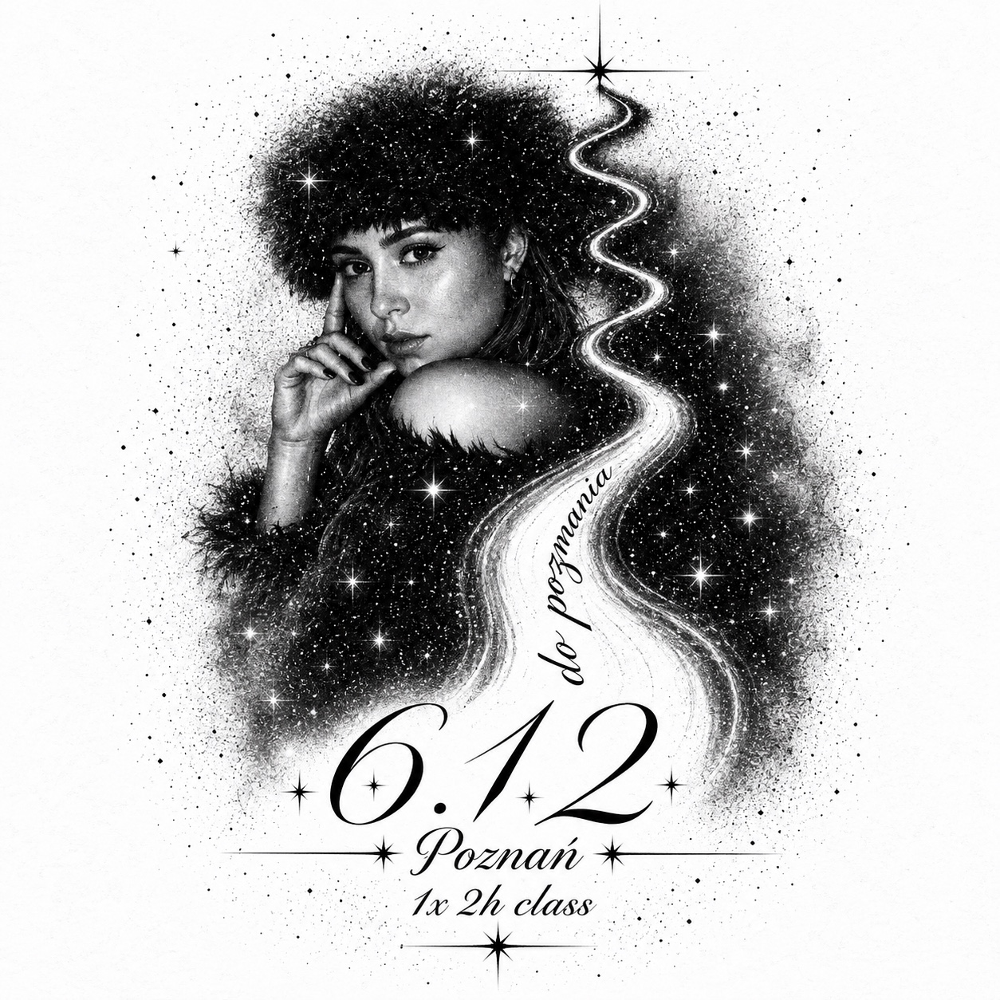

OPEN CLASS · 6.12
Open Class z Martą Pastuszką
Mamy dla Was wyjątkową niespodziankę na Mikołajki. Już 6.12 lekcję poprowadzi Marta Pastuszka.
Zapraszamy serdecznie na dwugodzinny trening, podczas którego możecie wyjść poza schematy, spróbować czegoś nowego i po prostu czerpać radość z tańca.
Niezależnie od tego, czy przychodzisz po nową dawkę inspiracji, chcesz popracować nad swoim ruchem, czy po prostu poczuć dobrą energię — znajdzie się tu miejsce dla Ciebie.
Data6 grudnia, PoznańGodziny17:00–19:00Czas2 godzinyCena100 zł
Nie zastanawiaj się za długo! Chodź i poznaj siebie!
Liczba miejsc ograniczona. Do zobaczenia na sali!
Zapisz się na Open Class